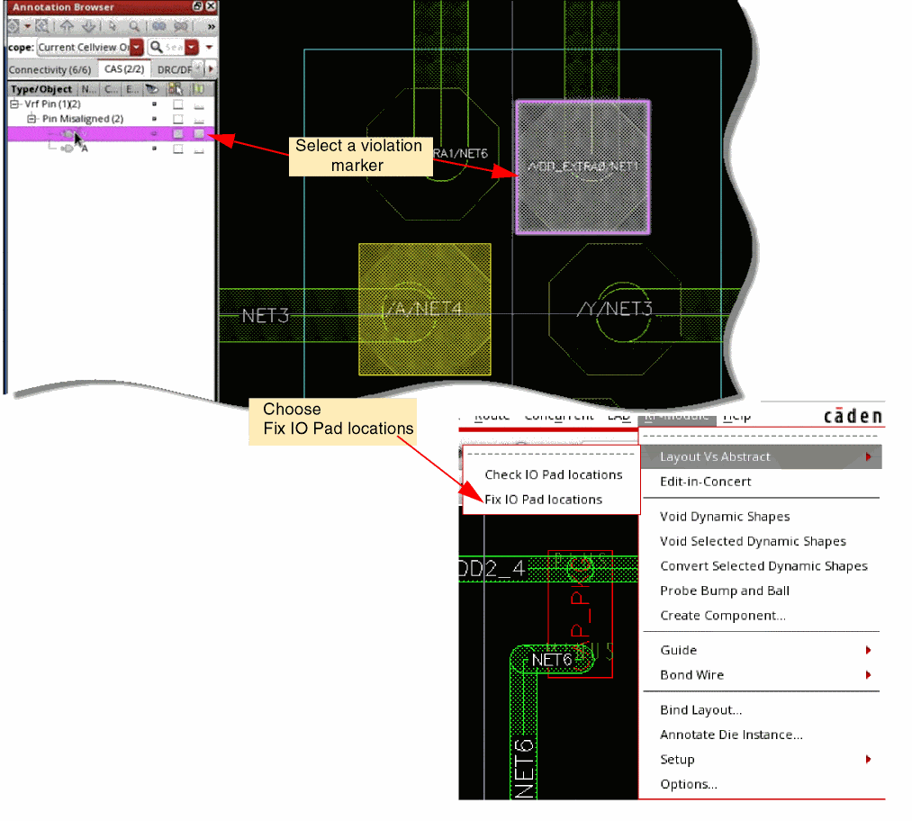
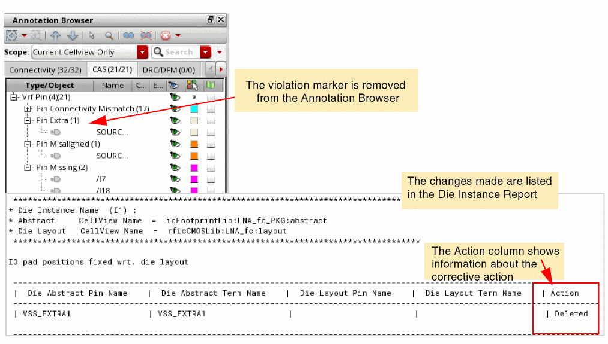

Running the LVA Fixer
To fix the violation markers created by the LVA checker, select the marker in the Annotation Browser and then choose Module – Layout Vs Abstract – Fix IO Pad locations.

The LVA fixer makes the required changes to fix the violation:
- Fixes connectivity mismatches.
-
Fixes the differences in the number of IO pads by doing one of the following:
Then, it updates die abstract’s schematic and symbol accordingly. -
Aligns IO pads
Use the Virtuoso RF Options form to select the violations that the LVA checker must fix.
The markers are cleared from the design and the Annotation Browser. The changes made are listed in the Die Instance Report.

Related Topics
IO Pad Connectivity Mismatch Fixes
Return to top